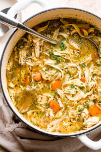

Chicken Noodle Soup

The Finished Dish
So simple and so tasty. Just what the Dr. ordered on a cold cloudy day!
- Egg Noodles
- Chicken broth
- Basil
- Salt & Pepper
- Boil 2 cups of water, add noodles
- Boil the noodles to make them soft
- Strain noodles and add hot broth
- Sprinkle with seasonings
- Enjoy!